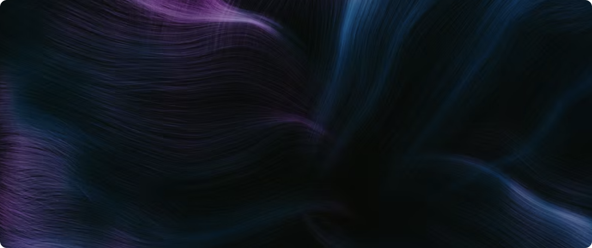

Attend our journal clubs, where we have bi-weekly presentations with biology's best and brightest. Catch up on the previous talks on our YouTube channel.
Our Projects



OpenBioML is a decentralized, collaborative research community founded on the belief that open-source machine learning and open science can accelerate biotechnology. Join our Discord server, participate in the community's research, or suggest an entirely new project.
We seek to support the broader community by providing an avenue where talented researchers worldwide can discuss, develop, and release machine learning models and tools focusing on downstream impact. We aim to build a diverse, globally-distributed community where skills and resources are shared openly to solve important problems. Through open collaboration and access to large-scale computational resources, we seek to break down barriers and enable high-impact research at the intersection of machine learning and biology.
Learn More
Attend our journal clubs, where we have bi-weekly presentations with biology's best and brightest. Catch up on the previous talks on our YouTube channel.
Participate in community research
or suggest an entirely new project.